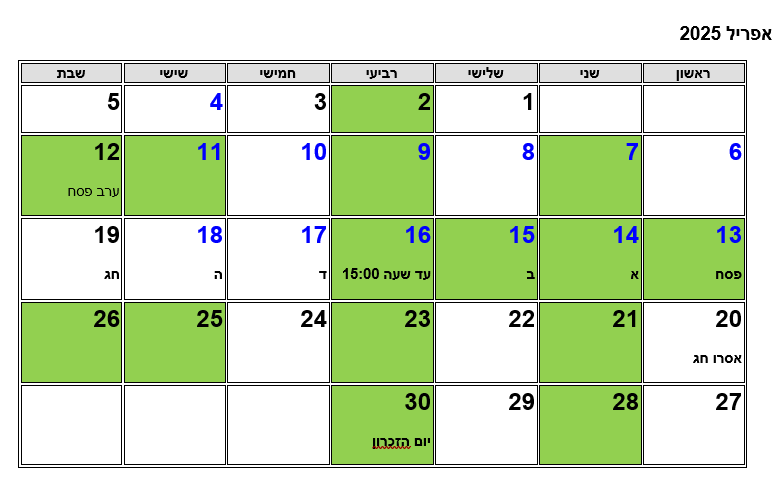

בזמן דיוני הגישור דנים בנושאים רבים ואחד הנושאים היותר חשובים שממעטים לתת עליו את הדעת הוא נושא חלוקת החגים ושעות המעבר.
הגדרה לא טובה של נושאים אלו עשויה להיות בעתיד בסיס למריבות מיותרות.
חלוקת חגים
לכאורה נושא פשוט. מחלקים את ימי החג שווה בשווה. אבל יש הרבה פרשנויות שונות שגורמות ללא מעט חילוקי דעות ומתחים בין ההורים.
בחוזה שתעשו תהיה טבלה של חלוקת ימי החג.
זה המקום להבין אלו על אלו נושאים כדאי לתת את הדעת.
- ימי חול – האם ימי החול בין החגים נכללים בחלוקת החגים?
- אלו חגים יופיעו בטבלה? לדוגמה, האם חנוכה נחשב כחג?
- האם החלוקה בנויה נכון כך שהחגים נבחרו לסירוגין? (לדוגמה, יום כיפור אצל הורה אחד ומחצית ראשונה של סוכות אצל הורה אחר)
- האם מחלקים את ראש השנה ושבועות או לא?
| הורה | ימים | חג |
|---|---|---|
| א | 2 | ראש-השנה |
| ב | 1 | יום-כיפור |
| א | 4 | סוכות - חג ראשון ושלושה ימי חול-המועד הראשונים |
| ב | 4 | סוכות - שני ימי חול-המועד האחרונים, הושענא רבה ושמחת תורה |
| א | 4 | חנוכה - ארבעת הימים הראשונים |
| ב | 4 | חנוכה - ארבעת הימים האחרונים |
| א | 2 | פורים ושושן פורים |
| ב | 4 | פסח - חג ראשון ושלושת ימי חול-המועד הראשונים |
| א | 4 | פסח - שני ימי חול-המועד האחרונים, חג שני ואסרו חג |
| ב | 1 | ל"ג בעומר |
| א | 1 | יום-העצמאות |
| ב | 2 | שבועות, לרבות אסרו-חג |
חופשות בית ספר נוספות
מעבר לחופשות החגים יש חופשות נוספות כגון חופשת פסח שמתחילה כשבוע לפני פסח וחופשת הקיץ.
מקובל בחופשת הפסח שלפני החג לנהוג לפי ימי השהות הרגילים. בחופשת הקיץ תוכלו לגוון כרצונכם. למשל:
- המשך ימי השהות הרגילים וחופשות לפי מה שקבעו ההורים
- שבוע – שבוע
- סידור שונה כפי שיסכימו ההורים ואם לא הסכימו לפי ימי השהות הרגילים
שעות מעבר
זהו נושא שעשוי להיות מקור למתחים רבים ולכן חשוב להקדיש לו תשומת לב.
בימי לימודים, שעת המעבר היא סיום הבית ספר. מה שעת המעבר אם לא התקיימו הלימודים או שהילד לא הלך לבית ספר?
מהי שעת המעבר בערב חג ובסופו של חג?
מהי שעת המעבר בימי חופש? שימו לב שהילדים, במיוחד מתבגרים נוהגים לישון בימי חופש בשעות הבוקר לכן רצוי להתחשב בהם בקביעת שעת המעבר בימי חופש.
ארועים משפחתיים
רצוי לסכם מראש מה קורה כשארועים של צד אחד מתקיימים בזמני השהות של הצד השני
לסיכום
נושא החגים, חופשות ושעות המעבר חשוב. הקפדה על הפרטים תמנע מתחים בעתיד ותקל על ילדיכם.
המלצה חמה – הכינו בכל שנה מראש לוח שנה שכולל את ימי השהות. לדוגמה:
